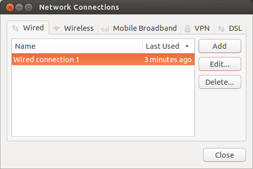
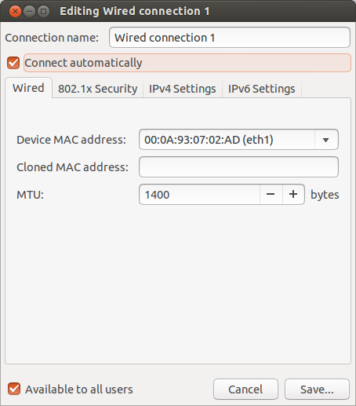

লিনাক্সে বাংলালায়ন মডেম দিয়ে https যুক্ত কিছু সাইটে এক্সেস করতে না পারার সমাধান।

সমস্যাটার ভুক্তভোগী আজ ৪ মাস ধরে। উবুন্টু লিনাক্স থেকে বাংলালায়ন মডেম দিয়ে ফেসবুক, জিমেইল, ওডেক্স বা গিটহাবের মত সাইটগুলোতে ঢুকতে পারতাম না। সমস্যা সমাধানে গুগল সার্চের বিভিন্ন সমাধান ইমপ্লিমেন্ট করেও কাজ হল না। বাংলালায়ন কাস্টমার কেয়ারও ঠিকমত সমাধান দিতে পারল না।শেষ পর্যন্ত যে সমাধানটা পেলাম তা হল MTU ভেল্যু চেঞ্জ করে ১৪০০ দিতে হবে। তাহলেই কাজ হবে। এ কাজটা করার জন্য উবুন্টুর নেটওয়ার্ক কানেকশনে যান।
Edit এ ক্লিক করুন।

এখানে MTU ভেল্যু ১৪০০ করে দিন।
এবার মডেমটি খুলে আবার লাগান। এখন থেকে https কানেকশনে আর সমস্যা হবে না।
ভাল থাকবেন সবাই।